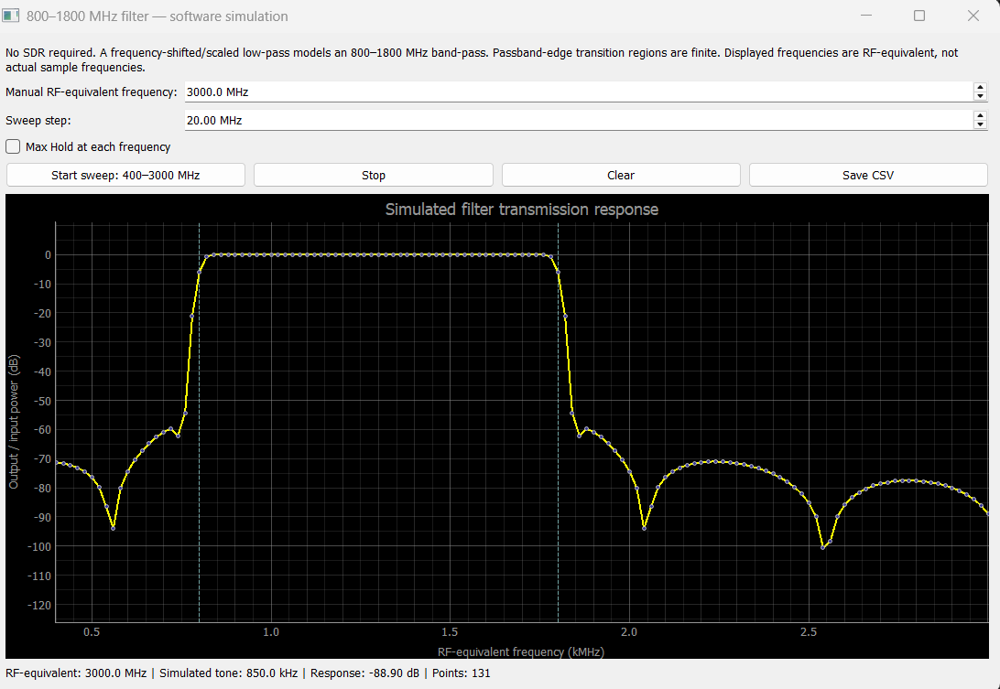
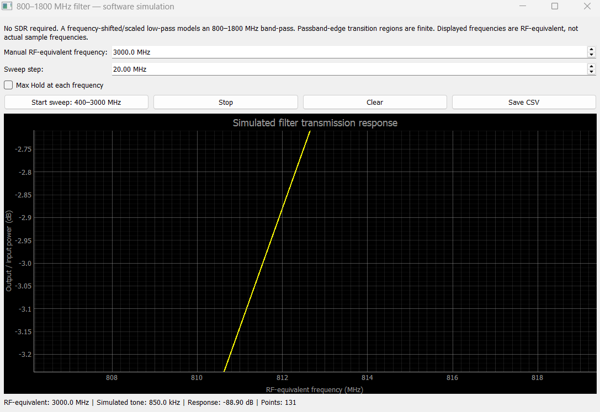
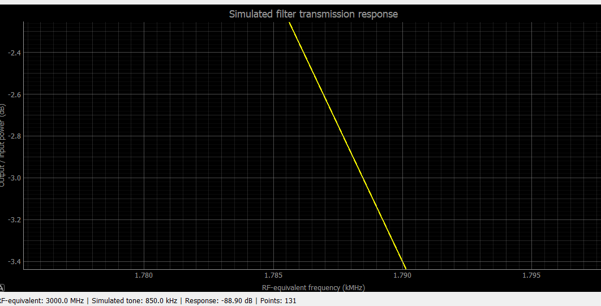

LAB02 / PRE-LAB · NOISE FIGURE · P1dB · IIP3
پیشگزارش آزمایش دوم: عدد نویز و پارامترهای RF
مطالعه نظری، حل تحلیلی، طراحی اندازهگیری و تحلیل ریسک؛ مطابق راهنمای ضمیمهشده با عنوان «آزمایش ۸: عدد نویز و پارامترهای RF».
آزمایش دوم در ترتیب انتشار این وبسایت است؛ شماره «۸» شماره درجشده بر راهنمای مدرس است. گروه: سروش مومنی و مهدی قلمی نوبر؛ مدرس: دکتر سید محمد کرباسی.
TASK 01 / STUDY SUMMARY
تکلیف ۱ — خلاصه یکصفحهای مطالعه منابع
عدد نویز (Noise Figure) معیاری برای افت نسبت سیگنال به نویز در عبور از یک گیرنده واقعی است. نویز حرارتی منبع در دمای مرجع T₀ = 290 K دارای چگالی توان تقریبی −174 dBm/Hz است؛ گیرنده علاوه بر این نویز، نویز داخلی نیز اضافه میکند. ضریب نویز خطی F = SNRin / SNRout (برای ورودی در دمای مرجع) و عدد نویز دسیبلی NF = 10 log₁₀(F) است. دمای نویز معادل ورودی Tₑ = T₀(F−1) نشان میدهد نویز تولیدشده در گیرنده معادل چه افزایش دمایی در ورودی است. بنابراین NF کمتر به معنای امکان آشکارسازی سیگنال ضعیفتر است، نه الزاماً بهره بیشتر. در زنجیره چندطبقه، رابطه فریس نشان میدهد نویز طبقات بعدی بر حاصلضرب بهره طبقات قبلی تقسیم میشود و به همین دلیل بهره کافی در ابتدای زنجیره مهم است.
روش Y-Factor عدد نویز را از نسبت توان نویز خروجی با منبع کالیبره در حالت روشن و خاموش اندازه میگیرد. با Y = Non/Noff، ENR = (Th−T₀)/T₀ و فرض دمای حالت خاموش برابر T₀، داریم F = ENR/(Y−1). چون هر دو توان خروجی در بهره و پهنایباند یکسان ضرب میشوند، این دو عامل در نسبت حذف میشوند؛ بنابراین کالیبراسیون مطلق توان یا تبدیل دقیق dBFS به dBm لازم نیست. بااینحال ثابتماندن بهره، خطیماندن گیرنده در حالت روشن، انتخاب ENR مناسب و لحاظ کردن تلفات کابل/تضعیفگر ضروری است.
نقطه تقاطع مرتبه سوم (IP3) یک مشخصه برونیابیشده برای پیشبینی شدت محصولات بینمدولاسیون در حضور دو سیگنال قوی و نزدیک به هم است. برای مدل غیرخطی مکعبی، محصولات در فرکانسهای 2f₁−f₂ و 2f₂−f₁ ایجاد میشوند. با هر ۱ dB افزایش توان هر تن، خروجی تن اصلی تقریباً ۱ dB و محصول مرتبه سوم تقریباً ۳ dB زیاد میشود. تقاطع امتداد این دو خط، IIP3 یا OIP3 را مشخص میکند؛ IIP3 بالاتر یعنی تحمل بهتر تداخل قوی. این نقطه معمولاً قابل اندازهگیری مستقیم در همان سطح نیست و فقط در محدودهای معتبر است که مدل مکعبی و شیب ۳ برقرار باشند. فشردگی بهره یا کلیپشدن ADC میتواند این فرض را نقض کند.
جمعبندی: NF حد حساسیت پایین و P1dB و IIP3 محدودیت بالایی ناشی از غیرخطیبودن را توصیف میکنند. افزایش بهره پیش از ADC میتواند سهم نویز ADC را کم کند، اما باعث اشباع زودتر میشود؛ انتخاب بهره مناسب به سطح سیگنال و تداخل وابسته است.
این خلاصه بر اساس مفاهیم و ارجاعات راهنمای مدرس تنظیم شده است؛ مطالعه مستقل و مستقیم متن کامل کتاب/یادداشت کاربردی در این بسته ادعا نمیشود.
TASK 02 / ANALYTICAL QUESTIONS
تکلیف ۲ — پاسخ کامل پرسشهای نظری
۲ـ۱. دمای نویز معادل و محاسبه فریس
با دمای مرجع T₀ = 290 K:
| NF (dB) | F (خطی) | دمای نویز معادل Tₑ (K) |
|---|---|---|
| ۱ | ۱٫۲۵۸۹ | ۷۵٫۰۹ |
| ۳ | ۱٫۹۹۵۳ | ۲۸۸٫۶۳ |
| ۶ | ۳٫۹۸۱۱ | ۸۶۴٫۵۱ |
| ۱۰ | ۱۰ | ۲۶۱۰ |
زنجیره اول: LNA با G₁ = 20 dB = 100 و F₁ = 100.1 = 1.2589؛ فیلتر ۳ dB با L = 100.3 = 1.9953 و G₂ = 1/L = 0.5012, F₂ = L؛ سپس مخلوطکننده و مبدل با F₃ = 101.5 = 31.6228. طبق فریس:
اگر فیلتر پیش از LNA قرار گیرد، اولین طبقه دارای ضریب نویز L و بهره 1/L است:
پس جابهجایی فیلتر ۳ dB به جلوی LNA، در این زنجیره مشخص NF را حدود ۲٫۲۰ dB بدتر میکند؛ افزایش دقیق الزاماً برابر ۳ dB نیست.
۲ـ۲. استخراج رابطه Y-Factor، دمای سرد متفاوت و تضعیفگر
از رابطه توان نویز خروجی N(T) = GkB(T+Tₑ) با بهره و پهنایباند ثابت:
اگر حالت خاموش در دمای Tc ≠ T₀ باشد، تعریف ENRc = (Th−Tc)/T₀ را به کار میبریم و داریم:
این اصلاح در صورتی درست است که دمای واقعی دو حالت منبع معلوم باشد و سایر شرایط تغییر نکنند.
برای تضعیفگر با اتلاف خطی A ≥ 1 در دمای T₀، دمای معادل خروجی آن T′ = Tin/A + (1−1/A)T₀ است. بنابراین حالت خاموش در T₀ باقی میماند، ولی اختلاف دمای روشن و خاموش بر A تقسیم میشود:
این برابری برای تضعیفگر تطبیقیافته در دمای T₀ و با اتلاف مشخص معتبر است؛ کابل و عدم تطبیق واقعی به بودجه خطا اضافه میشوند.
۲ـ۳. حساسیت خطای NF به خطای ۰٫۱ dB در Y
ابتدا با ENR = 15 dB = 31.6228 مقدار Y = 1+ENR/F را محاسبه میکنیم. سپس Y را در مقیاس dB بهاندازه ۰٫۱ dB کم و زیاد و از نو NF را محاسبه میکنیم.
| NF واقعی | Y خطی | Y (dB) | خطای NF با Y −0.1 dB | خطای NF با Y +0.1 dB |
|---|---|---|---|---|
| ۶ dB | ۸٫۹۴۳ | ۹٫۵۱۵ dB | +۰٫۱۱۳ dB | −۰٫۱۱۲ dB |
| ۲۵ dB | ۱٫۱۰۰ | ۰٫۴۱۴ dB | +۱٫۲۵۲ dB | −۰٫۹۹۱ dB |
حساسیت مرتبه اول |dNF/dYdB| = Y/(Y−1) است: در حالت دوم Y به ۱ نزدیکتر است، بنابراین یک خطای کوچک در اختلاف نویز به خطای بزرگی در NF تبدیل میشود. قاعده انتخاب ENR: اختلاف حالت روشن و خاموش باید بهوضوح بزرگتر از خطای اندازهگیری باشد، اما توان نویز روشن نباید باعث تراکم/اشباع شود؛ بهطور طراحی، ENR مؤثر چند dB بالاتر از NF مورد انتظار (مثلاً حدود ۵ تا ۸ dB) نقطه شروع مناسبی است و باید با خطیبودن گیرنده کنترل شود.
۲ـ۴. مکعب غیرخطی، IM3، IIP3 و P1dB
با x(t)=a[cos(ω₁t)+cos(ω₂t)] و y=a₁x+a₃x³، در بسط مکعب جمله 3a³cos²(ω₁t)cos(ω₂t) وجود دارد. با استفاده از اتحادهای مثلثاتی، دامنه (ضریب کسینوس) در فرکانس 2ω₁−ω₂ برابر است با:
در ناحیه سیگنال کوچک، توان تن اصلی متناسب a² و توان محصول IM3 متناسب a⁶ است. چون توان ورودی هر تن نیز متناسب a² است، شیب IM3 نسبت به توان ورودی در محور dB برابر ۳ و شیب تن اصلی برابر ۱ میشود. اگر اختلاف سطح دو خط در خروجی Δ dB باشد، برای رسیدن به تقاطع باید توان ورودی را Δ/(3−1) dB افزایش دهیم:
برای تراکم تکتن در همین مدل، مولفه اصلی با دامنه ورودی a برابر a₁a + (3/4)a₃a³ است. با a₃/a₁<0، در P1dB بهره دامنه نسبت به امتداد خطی برابر 10−1/20 = 0.89125 است:
از سوی دیگر در تقاطع برونیابیشده IM3، (3/4)|a₃/a₁|aIP3² = 1. نسبت توانهای متناظر برابر aIP3²/a1dB² = 1/(1−10−1/20) و لذا:
دو محدودیت: (۱) مدل مکعبی بیحافظه و غالببودن جمله مرتبه سوم در بازه مورد بررسی لازم است؛ در دستگاه واقعی مرتبههای بالاتر و اثر فرکانس/حافظه وجود دارند. (۲) اگر ADC کلیپ کند یا محدودکننده/AGC وارد عمل شود، شیب محصولات میتواند از ۳ منحرف شود؛ در این حالت تخمین IP3 و فاصله ۹٫۶ dB قابل اتکا نیستند.
۲ـ۵. محاسبه SFDR در دو پهنای باند
با NF = 8 dB، IIP3 = −10 dBm و تعریف کف نویز ارجاعشده به ورودی:
| پهنای باند | کف نویز ورودی | SFDR |
|---|---|---|
| ۱۰ kHz | −۱۲۶٫۰۰ dBm | ۷۷٫۳۳ dB |
| ۲۰۰ kHz | −۱۱۲٫۹۹ dBm | ۶۸٫۶۶ dB |
با ۲۰ برابرشدن پهنای باند، توان نویز یکپارچه حدود ۱۳٫۰۱ dB زیاد میشود و SFDR حدود ۸٫۶۷ dB کم میشود؛ چون قدرت محصولات مرتبه سوم با پهنای باند نویز به همان شکل مقیاس نمیشود. مقایسه معتبر نیازمند تعریف یکسان پهنای باند معادل نویز است.
۲ـ۶. افزایش ۱۰ dB بهره در گیرنده هشتبیتی
اگر در بهره صفر سطح تماممقیاس ورودی ADC برابر −30 dBm باشد، افزایش بهره پیش از ADC بهاندازه ۱۰ dB سطح تماممقیاس ارجاعشده به ورودی گیرنده را به −40 dBm میرساند. همزمان کف نویز متعلق به ADC، وقتی به ورودی گیرنده ارجاع داده شود، ۱۰ dB کاهش مییابد (با ثابتبودن نویز خود ADC). اگر تراکم اندازهگیریشده ناشی از محدودیت ADC باشد، P1dB ورودی نیز تقریباً ۱۰ dB پایین میآید؛ ولی P1dB یک طبقه آنالوگ مستقل الزاماً اینطور جابهجا نمیشود. هشتبیتیبودن بهتنهایی NF گیرنده یا P1dB دقیق را تعیین نمیکند.
به روایت فریس، با افزایش بهره جلویی سهم نویز طبقات بعدی/ADC تقسیم بر بهره بیشتر میشود؛ پس در بهرههای بالا NF به کف تعیینشده بهوسیله طبقات نخست نزدیک میشود و از آن پس افزایش بهره کمکی به NF نمیکند، در حالی که خطر اشباع و کاهش محدوده دینامیکی ادامه دارد.
TASK 03 / MEASUREMENT DESIGN
تکلیف ۳ — جدول طراحی اندازهگیری
تفکیک طراحی از داده: ENR منبع، فرکانس مجاز قابل تولید، IIP3 واقعی و پاسخ بهره گیرنده باید قبل از اجرا بررسی شوند. مقادیر جدول، نقطه شروع قابلمحاسبهاند و جایگزین مشخصات تجهیزات نیستند. برای دو حالت NF ≈ ۷ و ۳۰ dB، دو منبع نمونه با ENR اسمی ۱۵ و ۳۵ dB در نظر گرفته شدهاند.
| کمیت در جدول ۳ راهنما | مقدار پیشنهادی | دلیل عددی و شرط اعتبار |
|---|---|---|
| ENR مناسب برای NF حدود ۷ و ۳۰ dB | برای ۷ dB: ENReff = 15 dB؛ برای ۳۰ dB: ENReff = 35 dB | YdB=10log₁₀(1+10(ENR−NF)/10)؛ بهترتیب ۸٫۶۴ و ۶٫۱۹ dB؛ اختلاف دو حالت بهاندازه کافی قابل خواندن است، مشروط به نبود تراکم. |
| تضعیف بعد از منبع با ENR=۱۵ یا ۳۵ dB | برای NF≈۷: منبع ۱۵ dB → ۰ dB؛ منبع ۳۵ dB → ۲۰ dB. برای NF≈۳۰: منبع ۳۵ dB → ۰ dB؛ منبع ۱۵ dB → برای اندازهگیری دقیق نامناسب. | در حالت اول 35−20=15 dB و Y=8.64 dB. برای NF≈۳۰ با منبع ۱۵ dB حتی بدون تضعیف، Y≈0.135 dB و به خطا بسیار حساس است؛ تضعیف مثبت آن را بدتر میکند. منبع ۳۵ dB با NF≈۷ بدون تضعیف، Y≈28.01 dB دارد و ممکن است گیرنده را اشباع کند. |
| زمان میانگینگیری برای نوسان کمتر از ۰٫۰۵ dB در نوار ۴۰۰ kHz | حداقل نظری برای یک تخمین: ۰٫۰۱۹ s؛ برای اختلاف دو خوانش مستقل: ۰٫۰۳۸ s؛ تنظیم عملی پیشنهادی: ۱ s برای هر حالت با چند تکرار. | تقریب رادیومتری σdB ≈ 4.343/√(Bτ) میدهد τ > (4.343/0.05)²/(4×10⁵)≈0.0189 s. برای اختلاف دو نمونه مستقل ضریب √۲ افزوده میشود. این فقط نویز آماری ایدهآل است و خطاهای همبسته، پهنایباند مؤثر و خودهمبستگی نمونهها را پوشش نمیدهد. |
| بازه و گام جاروب تکتن؛ بیشینه توان مجاز ورودی | شروع نمونه: −۸۰ تا −۲۰ dBm با گام ۵ dB؛ نزدیک تراکم: ۱ dB. سقف سخت ایمنی: −۱۰ dBm در ورودی (پیشنویس آزمایش). | جاروب را از کمترین توان شروع کنید؛ برای ماندن زیر حد ایمنی، سقف اجرایی اولیه −۲۰ dBm (۱۰ dB حاشیه) انتخاب شده است. اگر P1dB تا −۲۰ dBm دیده نشد، ادامه جاروب فقط پس از تأیید توان ورودی، اتلاف کابل و راهنمای سختافزار و هرگز بالاتر از −۱۰ dBm مجاز است. بازه تضمین نمیکند تراکم حتماً رخ دهد. |
| فرکانس دو تن، فاصله و IM3 | نمونه انتخابی: f₁=433.20 MHz و f₂=433.30 MHz؛ فاصله ۱۰۰ kHz؛ محصولات: ۴۳۳٫۱۰ و ۴۳۳٫۴۰ MHz. | 2f₁−f₂=433.10 MHz و 2f₂−f₁=433.40 MHz. همه چهار خط در پهنای ۴۰۰ kHz جای میگیرند، با این شرط که فیلتر و پهنایباند عملی دستگاه پوشش کافی داشته و روی این بسامد سیگنال مزاحم غالب نباشد. اتصال باید کابلی و ایزوله باشد. |
| توان هر تن برای IM3 حداقل ۱۰ dB بالاتر از کف نویز نوار ۱۰ kHz | فرمول طراحی: Ptone ≥ (Nfloor,10k+10+2IIP3)/3. نمونه فرضی IIP3=−10 dBm: برای NF≈۷: حداقل −۴۵٫۷ dBm؛ برای NF≈۳۰: حداقل −۳۸٫۰ dBm به ازای هر تن. | مدل مکعبی: PIM3,in=3Ptone−2IIP3 و Nfloor,10k=−174+NF+40؛ یعنی −۱۲۷ و −۱۰۴ dBm. حداقلهای محاسبهشده فقط اگر IIP3 واقعاً −۱۰ dBm و شیب ۳ برقرار باشد اعتبار دارند؛ در آزمایش با چند سطح کمتوان بازبینی شوند. مجموع دو تن هم زیر سقف ایمنی بماند. |
تذکر: برای دو تن مساوی هر یک با توان P، توان جمعی در حالت ایدهآل P+3.01 dB است. حتی با رعایت محدودیت −۱۰ dBm جمعی، از جلوگیری از کلیپشدن داخلی نیز باید مطمئن شد.
TASK 05 / ANTENNA FREQUENCY RESPONSE
تکلیف ۵ — شبیهسازی آفلاین پاسخ فرکانسی آنتن
پاسخ فرکانسی آنتن را از ۴۰۰ تا ۳۰۰۰ مگاهرتز با گام ۲۰ مگاهرتز جاروب کردیم. بیشینهٔ پاسخ حدود +0.020 dB در فرکانس ۱۷۶۰ مگاهرتز بود. برای تعیین فرکانسهای قطع، در دو سوی باند محل عبور منحنی از سطح ۳ دسیبل پایینتر از بیشینه، یعنی حدود −2.980 dB، را از نمودار خواندیم.
| کمیت | مقدار تقریبی (MHz) |
|---|---|
| فرکانس قطع پایین fL | ۸۱۱ |
| فرکانس قطع بالا fH | ۱۷۸۸ |
| پهنای باند BW = fH − fL | ۹۷۷ |



TASK 06 / RISK REGISTER
تکلیف ۶ — سه اشتباه محتمل و پیشگیری از آنها
| ریسک | پیامد | راه پیشگیری و بررسی |
|---|---|---|
| ۱. اعمال توان بیش از حد به ورودی RX؛ فراموشکردن تضعیفگر یا جمعشدن توان دو تن | آسیب احتمالی بخش RF و/یا اشباع شدید ADC؛ داده غیرقابل استفاده | پیش از اتصال، بودجه سطح و اتلاف کابل را حساب کنید؛ مجموع توان را زیر −۱۰ dBm نگه دارید و حاشیه طراحی بگذارید. منبع را هنگام اتصال یا جداسازی خاموش کنید؛ جاروب را از کمترین توان آغاز کنید. در استفاده از فرستنده SDR، تضعیفگر ۳۰ dB طبق راهنما الزامی است. |
| ۲. نامعتبرشدن Y-Factor بر اثر AGC، تغییر بهره، Y نزدیک ۱ یا تراکم در حالت روشن | خطای شدید NF؛ غالباً برآورد بزرگتر از واقع به علت کاهش Y | AGC را خاموش و بهره/نرخ/فیلتر را در ON/OFF ثابت کنید. ENR مؤثر را برای Y قابلتفکیک و بدون اشباع برگزینید؛ ENR و تلفات واقعی را اصلاح کنید؛ پایداری خوانش و نبود کلیپشدن را پیش از محاسبه NF کنترل کنید. |
| ۳. نسبتدادن IM3 منبع سیگنال به گیرنده یا فرض شیب ۳ بدون آزمون | IIP3 و SFDR نادرست؛ ممکن است کلیپ ADC با رفتار مکعبی اشتباه گرفته شود | خلوص دو مولد، ایزولاسیون/ترکیبکننده و تلفات را بررسی کنید؛ توان هر تن را در چند سطح تغییر دهید و شیب ≈۳ dB/dB محصولات را بسنجید. در صورت جهش ناگهانی یا تغییر شیب، از گزارش IIP3 معتبر خودداری کنید. |
ریسک مکمل اجرایی: قبل از لمس کانکتورها تخلیه الکترواستاتیک انجام شود و اتصالات بدون فشار مکانیکی بسته شوند؛ این مورد در بخش ایمنی راهنما آمده است.
مراجع، فرضها و وضعیت تکمیل
- راهنمای پیشازجلسه «آزمایش ۸: عدد نویز و پارامترهای RF»، صفحات ۱ تا ۹؛ بهویژه تکالیف صفحات ۶ تا ۸ و شرط ایمنی صفحه ۸ (منبع مستقیم این گزارش).
- D. M. Pozar, Microwave Engineering, 4th ed., Wiley, 2012 (مرجع معرفیشده در راهنما؛ نقل مستقیم از متن کتاب انجام نشده است).
- Keysight Technologies, Noise Figure Measurement Accuracy: The Y-Factor Method, Application Note (مرجع معرفیشده در راهنما؛ استفاده از متن اصلی ادعا نمیشود).
- B. Razavi, RF Microelectronics, 2nd ed., 2012 (مرجع تکمیلی فهرستشده در راهنما).
انجامشده: تکلیفهای ۱، ۲ (شش پرسش)، ۳ (تمام ردیفهای جدول طراحی)، ۵ (شبیهسازی پاسخ فرکانسی آنتن)، ۶ (سه ریسک). هنوز انجامنشده: تکلیف ۴ (شبیهسازی آفلاین با فایل lab08_sim.grc). هیچ داده تجربی یا تأیید تحویل در این نسخه ادعا نمیشود.